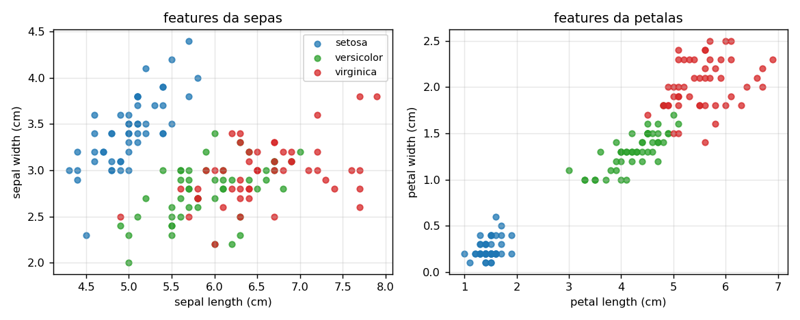
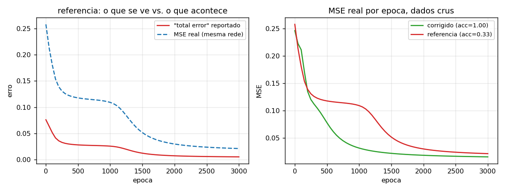
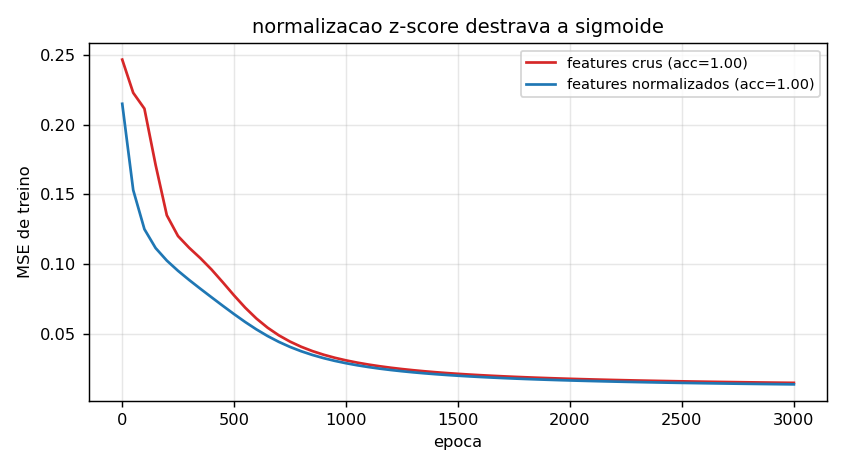
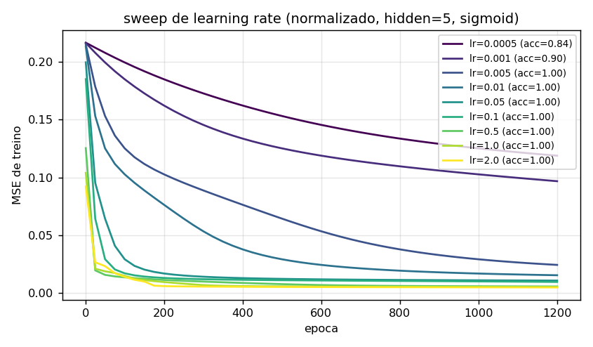
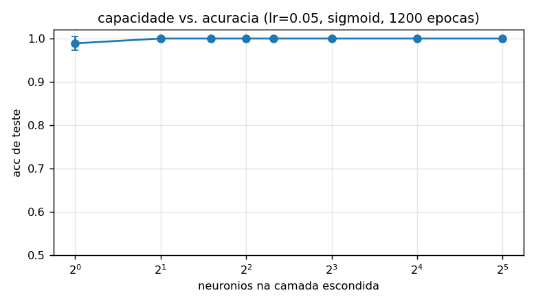
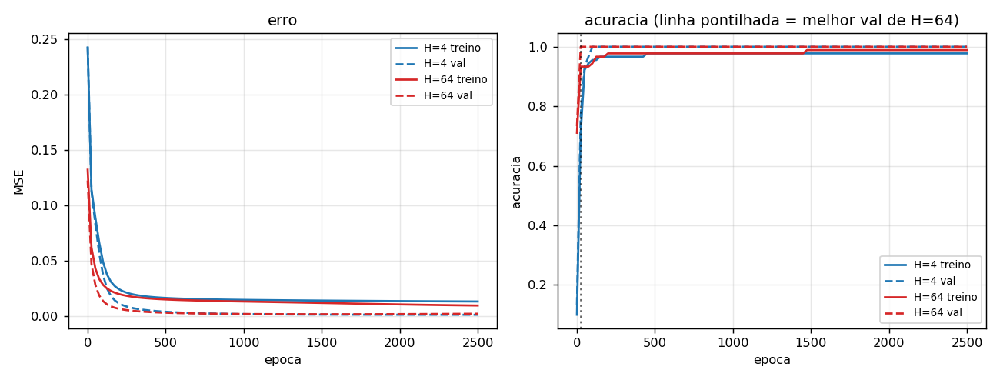
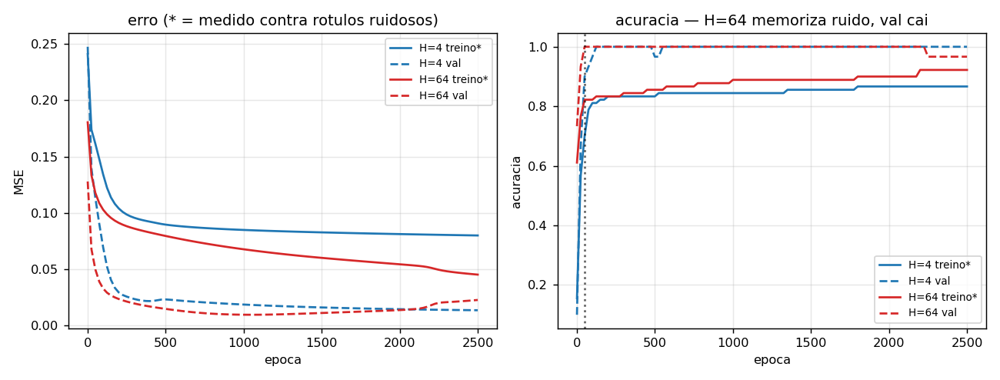
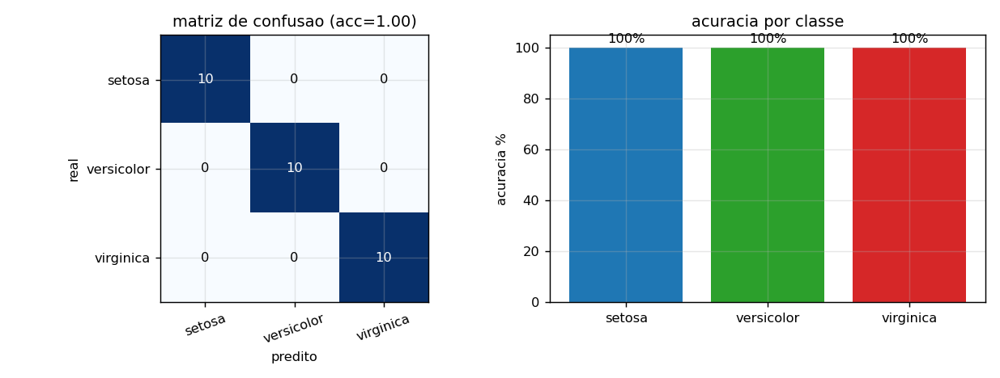
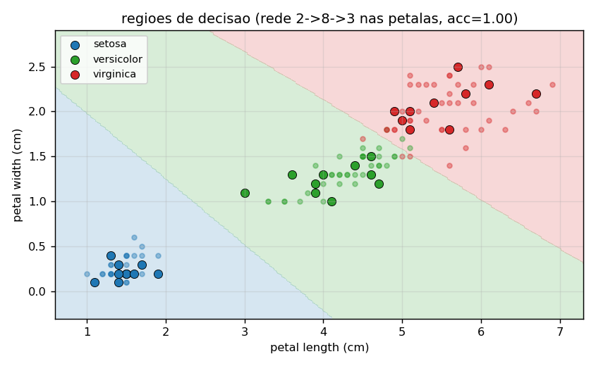

CI1026 - Visão Computacional e Percepção - TA05 Efi Fuchs Santos da Silva, Bruno Wavrzenczak, Edisson Luiz Matias Junior código: https://github.com/AlmiranteFuchs/TA05-mlp
A tarefa pediu pra estudar o notebook de referência "MLP from scratch" (versão adaptada de um notebook do Kaggle), ajudar a depurar e tentar descobrir como classificar bem as três classes do Iris, olhando convergência, erros e overfitting.
O Iris tem 150 amostras de 4 features (medidas de sépala e pétala) e 3 classes. A rede do notebook é um 4-5-3 com sigmoid, erro quadrático e SGD por amostra com one-hot na saída.

Adiantando o resultado: a rede treina direito, mas o predict dela joga o aprendizado fora. Depois de 3000 épocas ela marca 33% no teste (nível de chute), e a mesma rede, com os mesmos pesos e o predict corrigido, marca 100%.
Copiamos o notebook pra dois arquivos: src/mlp_ref.py é o original com
os bugs preservados, src/mlp.py é a versão corrigida. Bugs que achamos:
predict não aplica a função de ativação. O forward do treino passa
pela sigmoid nas duas camadas, mas o predict faz só X @ W1 + b1 @ W2 +
b2, ou seja um forward linear. Como a ativação escondida também some, a
função que a rede decide muda de verdade. Na nossa seed o teste deu
0.333; trocando só o predict pelo forward com ativação, a mesma rede
treinada dá 1.000. A rede aprendia, quem reprovava era o predict.BIAS_output[j] -= lr*delta fica dentro do for i in
range(hiddenLayer), então ele andava 5x por amostra, com o mesmo update
repetido.np.array([-1,-1,-1]) vira int64).
O b[j] -= 0.4 trunca pra inteiro em vez de acumular, então na prática
os biases ficam presos em -1 o treino inteiro. Bug silencioso, não
aparece erro nenhum.total_error +=
square_error fica dentro do loop dos 3 neurônios de saída e acumula
somas parciais (o erro do neurônio 0 conta 3x, o do 1 conta 2x), com
fator 0.05 em vez de 0.5. O número impresso converge pra ~0.005 enquanto
o MSE real fica em ~0.021.params=None quebra na hora: o default grava iasHiddenValue (typo) e
depois lê self.BiasHiddenValue -> AttributeError.WEIGHT_output já atualizado (o certo seria usar os pesos antigos). Na
prática converge quase igual, mas não é o gradiente exato.
À esquerda tem o erro que o código mostra vs. o MSE real da mesma rede: a curva bonita esconde um MSE ~4x maior. À direita, o MSE real da referência vs. a corrigida nos mesmos dados crus: a corrigida converge mais cedo (o bias certo e o gradiente exato ajudam) e é ela que dá 100% no teste, porque o predict finalmente concorda com o treino.
Detalhe que a gente achou curioso: nos outputs salvos do notebook, a execução original deu 96.67% (errou só a única virginica do teste). Ou seja, o estrago do predict depende da sorte da inicialização; na nossa seed ele derrubou tudo pra 33%.
Mesmo split estratificado 80/20 do notebook (random_state=11): 120 de
treino, 30 de teste. Pra parte de overfitting, split interno de 96 treino
/ 24 validação. Normalização z-score ajustada só no treino. Sweeps com 3
seeds, reportamos média +- desvio no teste.
Normalização. Com as features cruas (pétala vai de ~1 a 7 cm) a sigmoid trabalha saturada e a descida arrasta: as primeiras ~1500 épocas são só pra destravar. Com z-score, a mesma rede e os mesmos pesos chegam a MSE ~0.01 em menos de 400 épocas. A acc final é igual nos dois casos (1.0, a tarefa é fácil), mas a velocidade muda tudo na prática.

Learning rate. Sweep de 0.0005 a 2.0, rede 4-5-3, sigmoid, dados normalizados, 1200 épocas:
lr=0.0005 acc=0.844 +- 0.031
lr=0.001 acc=0.900 +- 0.072
lr=0.005 acc=1.000 +- 0.000
lr=0.01..2.0 todos 1.000 +- 0.000
O lr=0.005 do notebook funciona, só é conservador: a janela útil vai de ~0.005 a 2.0. MSE + sigmoid em dados normalizados é bem comportado, nem lr=2.0 diverge (só oscila mais no começo). Abaixo de ~0.005 a rede não chega lá nas 1200 épocas.

Neurônios escondidos, com lr=0.05: H=1 já dá 0.989 +- 0.016; de H=2 pra cima dá 1.000 em todas as seeds. Faz sentido: versicolor e virginica são quase separáveis linearmente nas pétalas, a camada escondida precisa de pouquíssima capacidade pro Iris.

Ativação (lr=0.05, H=5, 1200 épocas):
sigmoid (bias=-1) acc=1.000 +- 0.000
tanh (bias=-1) acc=1.000 +- 0.000
relu (bias=-1) acc=0.322 +- 0.016
relu (bias= 0) acc=0.856 +- 0.140
ReLU com bias -1 é rede morta: os pré-ativações nascem negativos, a saída trava em 0, o gradiente é 0 e nada aprende. A rede colapsa prevendo uma classe só (~33%). Com bias 0 ela revive, mas segue instável (uma seed ficou em 0.67). ReLU aqui pediria uma inicialização melhor que uniforme +-1 com bias constante. Sigmoid e tanh fecham 100% sem drama, e é por isso que o notebook original usa sigmoid.
Com dados limpos não aparece overfitting, o que já é um resultado. Treinamos H=4 e H=64 por 2500 épocas e a validação acompanha o treino o tempo todo (val_acc chega em 1.0 perto da época 25 e não sai de lá). O Iris normalizado é separável demais: capacidade extra não piora a generalização, só gasta época. Early stopping na melhor val (~época 25-200) economiza ~90% do treino sem custar nada.

Pra ver o fenômeno de verdade a gente embaralhou 20% dos rótulos do treino. Aí aparece a assinatura clássica no modelo grande: o H=64 vai memorizando o ruído (a acc de treino, medida contra os rótulos errados, sobe até 0.92) enquanto a val limpa cai de 1.00 pra 0.97, e o val_loss faz fundo ~época 1000 e volta a subir com o train_loss ainda caindo. O H=4 não tem capacidade pra memorizar e segura a val em 1.0. Ou seja: gap treino-val crescendo = overfitting, e aqui a saída é early stopping (melhor val na época 50) ou modelo menor.

Juntando os experimentos, o que funcionou:
Config final: 4 -> 8 -> 3, sigmoid, lr=0.05, bias=-1, 800 épocas, dados
normalizados -> 100% no teste (30/30). Pra conferir, o
sklearn.MLPClassifier(8) também dá 1.0. A matriz de confusão sai
perfeita, nem versicolor vs. virginica escapam.

Como as pétalas carregam quase toda a informação, uma rede 2-8-3 treinada
só em petal length/width também fecha 100% de teste. As regiões de
decisão ficam quase lineares, com uma curva suave entre versicolor e
virginica bem onde os pontos se encostam:

O backprop da referência estava certo, os sinais de gradiente batem, mas cinco bugs em volta (predict linear, bias no loop errado, bias int truncado, métrica de erro furada, typo no construtor) faziam o notebook mostrar uma convergência bonita pra um modelo que, na nossa seed, errava 2/3 do teste. Depurado, o mesmo MLP com normalização e parada cedo acerta 100% das três classes. A dificuldade da tarefa tava muito mais no código que no problema. E o Iris só deixa ver overfitting quando a gente estraga os rótulos de propósito: aí o modelo grande memoriza o ruído e a validação mostra.